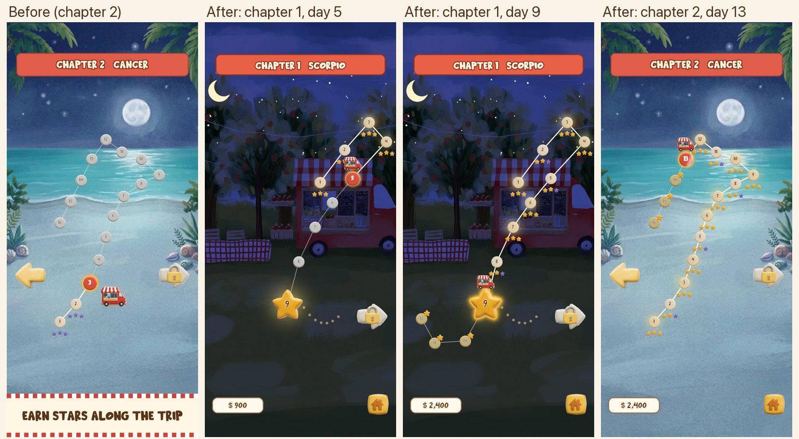

Food Truck Cafe
24 November. 2026.11.23 is live on the App Store; test build 2026.11.23 (3) is in TestFlight.
1Next
You
Release 2026.11.23 is approved and out (24 November; it can take some hours to reach every country's store).
Your App Store session (player ec14c6, 2026.11.23): the tutorial at 10:37 (every caption logged; some arrived late), day 1 done 10:38 with 3 stars, the between-days ad watched to the end at 10:41, two buys (Upgrade, Juice), day 2 done 11:06 with 2 stars. Your later days have not reached Unity yet: the game sends its events in batches, so they arrive late, not lost.
Done from your ticks: Cookie sprinkles stars, the ad at every day's start, bonus days and bigger stickers are in (MVP). Order sounds done as you picked, and the smaller map truck: Current.
Test build 2026.11.23 (3) is in TestFlight with the first four items in MVP; the rest go into the next build.
Header: your review continues (Q&A).
Your store test session: a plan in Q&A.
C chapter: three new ChatGPT drafts (fewer rules, watercolor, pink cloth) on its tab.
Me
I watch the review and tell you when the release is live, build 3 is ready.
2Q&A
Why was Unity's income so low on the 22nd, and who played that day? (24 Nov)
- The $0.01 day is Unity's 23 November (UTC). The overview chart shows it as the 22nd because it draws each UTC day at midnight UTC, which is 4 pm the day before in Pacific time. That day runs from 22 Nov 4 pm to 23 Nov 4 pm, Pacific. Unity's real 22 November was the best day of the week: $0.12.
- 23 November: 17 ads shown (more than most days) but only $0.01. 13 of them were in the Philippines, where an ad pays about $0.54 per thousand. No ad was shown in the US that day (2 requests).
- 22 November: 9 ads, 7 of them in the US at about $17 per thousand, so $0.12.
- Why (corrected after your question about the 17th): two things decide what an ad pays.
- Where the viewer is: on the 17th, $0.05 of the $0.07 came from a single US ad. The 23rd had no US ad.
- Whether the ad is watched to the end: on the 17th the Philippine player (d1c449) watched 8 of 9 ads fully, 7 of them reward ads (Daily Treats, the coin ad). That paid about $2.09 per thousand, $0.02 in all. On the 23rd the Philippine player (425b7c) skipped 10 of 12 between-days ads. That paid about $0.54 per thousand, $0.01 in all. Advertisers pay little for a skipped ad.
- Same player? No: two different player ids. 425b7c was a new install on the 23rd. (Unity's id belongs to the install, so a reinstall on the same phone would also get a new id; the two played quite differently, though.)
- Unity's numbers for the last day are estimates and can still move a little for a day or two.
The players on that day (7; times Pacific):
- Philippines, new (425b7c), 1:21 to 5:42 am: tutorial, then days 1 to 13 (all of chapter 1 and chapter 2's first day), 23 things bought. 13 ads: 12 between days (10 skipped, 2 watched to the end) and the Daily Treats ad. These are the ads of that day, at about $0.54 per thousand.
- Malaysia, returning (32078a), 9:20 pm on the 22nd: day 2, the Daily Treats ad.
- Pakistan, new (8922f2), 3:37 am: tutorial, the Daily Treats ad, no day.
- China, new (e7015c), 1:34 am: tutorial and day 1, no ad.
- Indonesia, new (599414), 6:51 am to 4 pm: tutorial (twice) and days 1 and 2, no ad. The next day they played on to chapter 2 day 7, still without a single ad.
- China, new (1f34c6), 8:27 am: left at tutorial caption 5.
- US (526320), 1:24 pm: Apple's reviewer, on the build under review; left at caption 3.
So the day's income was one Philippine player's 13 ads; no US player saw an ad that day.
| UTC day | 17 | 18 | 19 | 20 | 21 | 22 | 23 |
|---|---|---|---|---|---|---|---|
| Income | $0.07 | $0.08 | $0.06 | $0.10 | $0.10 | $0.12 | $0.01 |
| Ads shown | 12 | 10 | 32 | 9 | 13 | 9 | 17 |
| US ads | 1 | 4 | 0 | 0 | 9 | 7 | 0 |
| Philippines ads | 11 | 1 | 0 | 1 | 2 | 0 | 13 |
Your App Store test session: what we can learn from it (24 Nov)
The store copy is the only place real ads, real purchases and the player data (production) run, so one careful session checks things TestFlight never can.
- Before you start (2 minutes):
- Tell me the start time. I find your phone's new player id in the data and keep it out of every player count, as always.
- Don't tap ads. Unity counts a developer tapping their own real ads as invalid traffic, and that can put the ad account at risk. Watching them is fine. Safer still: add your phone as a test device in the Unity Ads dashboard; you then see test ads and the flow is the same.
- Turn on Settings > Privacy & Security > Analytics & Improvements > Share with App Developers for the day. Apple then sends us crash, hang and battery reports from your phone.
- During:
- Start as a new player: delete the game and install it from the App Store. This is exactly what new players get: the tutorial, the first day and the first ad. Our data says many new players leave at the first ad, so notice when it comes, how long it runs and how easy it is to close.
- Jot a few timed notes (or screenshots) of anything odd, for example "10:12 ad took long to appear". I match them against the data to check that every event fires when it should.
- Store-only things: how fast an ad shows after a day ends, whether "Ads unavailable" ever appears, the Remove Ads price page (no need to buy), Restore Purchases.
- Feel: stutters, heat or battery drop over about 30 minutes of play.
- After (me): I read your session from the data: every event, in order, against your notes. Then I list what is missing or wrong. I also check the Unity Ads report for your ads (loads, shows, fill), and the crash and energy reports once Apple sends them.
- Logging I would add for the next build (the session shows which matter most):
- why an ad failed, and how long it took to show;
- session start and end (length, app put in the background);
- shop opened and what was looked at;
- menu changes and kitchen use;
- slow loading or low frame rate on a phone.
- A tester switch (hidden, e.g. tap the title five times): your store copy then reports to the test data, so your play never mixes with players' again.
Release 2026.11.23 is still waiting for Apple's review; I will tell you as soon as it is out.
Header only, without a Search Results picture? (23 Nov)
- Yes. Each is optional and stands on its own. Apple: with no search results picture, search shows our screenshots (or app previews) as today.
- So: a header on the store page, and search stays as it is with our first three screenshots.
- Apple also allows one shared picture for both slots; not needed.
Header: four contents on the three backgrounds (23 Nov)
![Twelve word-free header banners in three columns, then six of them on iPhone store pages. Left column A: cream with mint dots under a mint and white scalloped awning. Middle column B: cream with mint dots and a mint scalloped hill along the bottom. Right column C: a metal baking tray seen from above on mint gingham. On A and B the rows are: 1 customers in an arc around the truck with small hearts; 2 an arch of food cookies over the truck with a customer at each end; 3 customers queued at the truck window, the girl in front handed an ice cream; 4 every customer holding the food it loves at its chin beside the truck. On the tray: 1 the truck cookie in the middle with two columns of customers each side and a heart and a star; 2 six customers in an oval around a big truck cookie; 3 a bakery display, each customer beside its food in two rows of four; 4 the customers and their foods laid out in a heart with little heart cookies between and the truck inside](hdrb_header.jpg)
- Backgrounds: A = N3's awning; B = N6's mint hill; C = N5's baking tray on mint gingham.
- On A and B: 1 customers in an arc around the truck; 2 an arch of food cookies over the truck; 3 the queue at the window, an ice cream handed out; 4 everyone with the treat they love.
- On the tray: 1 tidy grid around the truck; 2 a ring around a big truck; 3 a bakery display, each customer beside its food; 4 a heart of cookies.
- Why one large picture: Apple takes one 3840 x 1646 picture for every device; iPad, Mac and landscape show most of its width, an upright iPhone only about the middle third; the white box is the part every device shows.
Search Results (from A): four versions (23 Nov)
![Four search pictures built on the road trip idea, each in an iPhone search below. A1: the chapter 1 forest blending into the chapter 2 beach, a road along the bottom with the small red truck, two tilted phones and the words Bake and serve on the road. A2: the big red truck on the road in front, one big phone with the picnic table, the same words. A3: forest on the left with the picnic table phone, beach on the right with the beach table phone, the truck on the road between them, the words From picnic to beach. A4: a winding road from the forest to the beach with the truck on it, the picnic table and the beach table as round pictures, Bake and serve on the road](hdrv_search.jpg)
- Search: A1 tidied (one forest and one beach, no repeated copies); A2 the big truck and one big phone; A3 split, picnic left and beach right, "From picnic to beach"; A4 a winding road with both tables as round pictures.
3Current
Order sounds, as you picked. 24 November; not in a build.
- OK and Nice keep today's order-done sound (the cash register). Perfect plays my first try: today's cha-ching with a rising sparkle of four bells. The other new sounds are out of the game.
Map truck: smaller, parked on top of the day. 24 November; not in a build. iPhone 6.9 inch.

- The truck is 30 % smaller (84 instead of 120 tall) and always parks on top of its day, its wheels just over the circle's top (on day 9 over the big star). It still drives along the road between days.
4MVP
The next release, after 2026.11.23 (live). The first four are in test build 2026.11.23 (3); the rest are on main, in the next build.
- Ads keep starting: a failed Unity Ads start is tried again; slow loads time out and back off.
- The table's front: the cloth falls over the table's edge in the bottom safe area.
- Food starts on the table: every food's whole box starts inside the drag area.
- Bug fixes: update card and iOS versions; day card and day 9's star; page change while the truck drives; tutorial kitchen into day 1.
- Menu stickers larger on phones (approved).
- Day-end stars: Cookie sprinkles (your pick B): sprinkles and a crumbly pop per star, hearts for two, a sprinkle shower, shine and jingle for three.
- Bonus days: each chapter's last three days appear with a show when the day before them is reached (approved).
- The between-days ad moves to the day's start: right after Play on the day card, every day (your pick). The end of a day goes straight to the shop.
- Order sounds: Perfect gets a new sound (cha-ching and bells); OK and Nice keep today's.
- Map truck: smaller, parked on top of its day.
- Open: the adsStarted analytics event needs one entry in Unity's Event Manager (optional).
5Backlog
Nothing open.
6Analysis
Players, 22 Nov 9:00 to 24 Nov 9:40 (Pacific). Unity Analytics, production (store copies only).
- 13 players, 12 of them new. By country: Indonesia 3, China 2, US 2, Philippines, Pakistan, Egypt, Cambodia, Taiwan and Malaysia 1 each. Almost all Asia again.
- Tutorial: 7 of the 12 new players finished it. 4 left in the first captions (steps 0 to 5), within a minute. One of those, a US player on 2026.11.23 at 13:24 on the 23rd, is Apple's reviewer (the build under review).
- Two players played a lot:
- Indonesia (599414): 7 visits over two days. Finished all of chapter 1 and is on chapter 2 day 7, with 23 days finished (replays included) and 27 things bought, the whole shop. Not a single ad in all that time. That is the ad start failing and never retrying, the bug fixed for the next release.
- Philippines (425b7c): 4 visits. Finished chapter 1 and reached chapter 2 day 1, 23 things bought. 13 between-days ads, 10 of them skipped; the Daily Treats ad was watched. These are the Philippine ads that made 23 November's income so small.
- Others: Egypt played 3 days and watched both its ads (one rewarded). Indonesia (9b5f99) played 1 day. Malaysia came back for days 1 and 2. China (e7015c) played day 1. Pakistan and Indonesia (3e57ca) finished the tutorial but did not start day 1.
7Marketing
Nothing open.